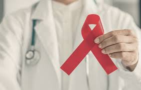

O que é
.jpeg)
O HIV (Vírus da Imunodeficiência Humana) é um retrovírus que ataca o sistema imunológico, principalmente os linfócitos T CD4+, essenciais para a defesa do corpo.
Ele se replica dentro dessas células, enfraquecendo o sistema imunológico e tornando o organismo vulnerável a infecções.
Ter o HIV não significa ter AIDS. Muitas pessoas vivem com o HIV por anos sem sintomas, mas ainda podem transmitir o vírus por relações sexuais desprotegidas,
compartilhamento de seringas, ou da mãe para o filho durante a gravidez, parto ou amamentação, sem medidas de prevenção.
O HIV é transmitido por:
Relações sexuais desprotegidas (vaginais, anais e orais);
Uso compartilhado de seringas;
Transfusão de sangue contaminado;
Da mãe para o filho durante a gravidez, parto ou amamentação;
Instrumentos não esterilizados que cortam ou furam.
O HIV não é transmitido por:
Sexo protegido com camisinha;
Masturbação a dois;
Beijos (na boca ou no rosto);
Suor, lágrimas ou picadas de insetos;
Contato social como aperto de mãos, abraços, uso compartilhado de utensílios ou ambientes como piscinas e banheiros.
O HIV é um retrovírus da subfamília Lentiviridae, caracterizado por um longo período de incubação, infecção das células sanguíneas e do sistema nervoso,
e enfraquecimento do sistema imunológico.
Diagnostico

O HIV (Vírus da Imunodeficiência Humana) é um retrovírus que enfraquece o sistema imunológico, atacando os linfócitos T CD4+, essenciais para a defesa do corpo.
Ele pode ser
transmitido por relações sexuais desprotegidas, uso de seringas compartilhadas, transfusão de sangue contaminado, da mãe para o filho durante a gestação, parto ou amamentação,
e por instrumentos não esterilizados.
Além disso, autotestes de HIV também são ofertados gratuitamente pelo SUS para que as pessoas possam se testar quando e onde quiserem. Saiba mais sobre autotestes de HIV aqui.
O Ministério da Saúde, em parceria com as Unidades da Federação, mantém a Rede Nacional de Laboratórios/Serviços de Saúde para a quantificação da carga viral do HIV e contagem
de linfócitos T CD4+, oferecendo exames de diagnóstico e monitoramento para pessoas vivendo com HIV e AIDS no SUS.
Além disso, promove a contratação de serviços para exames
como Genotipagem do HIV, Detecção do DNA pro-viral do HIV-1, Diagnóstico do HIV-2 e Tipificação do Alelo HLA-B*5701.
O ministério também monitora a qualidade dos exames
e garante acesso rápido aos resultados em todo o Brasil.
O "Manual da Rede Nacional de Laboratórios/Serviços de Saúde" e as "Orientações para apoio à gestão dos testes laboratoriais"
foram criados para apoiar a gestão local e os profissionais da rede, detalhando atividades, sistemas usados, responsabilidades dos envolvidos e os exames ofertados.
Tratamento
Os medicamentos antirretrovirais (ARV) são fundamentais no tratamento do HIV, ajudando a prevenir a multiplicação do vírus e o enfraquecimento
do sistema imunológico.
Desde 1996, o Brasil distribui gratuitamente ARVs para todas as pessoas que necessitam de tratamento, com uma lista de
22 medicamentos em 38 apresentações farmacêuticas.
Esses medicamentos ajudam a melhorar a qualidade de vida, reduzir infecções oportunistas e internações.
A prevenção combinada do HIV envolve três tipos de intervenções:
Intervenções Biomédicas: Incluem métodos de barreira como preservativos e lubrificantes, e o uso de ARVs, como o Tratamento para Todas as
Pessoas (TTP), Profilaxia Pós-Exposição (PEP) e Profilaxia Pré-Exposição (PrEP).
Intervenções Comportamentais: Buscam aumentar a conscientização e reduzir o risco de exposição ao HIV, incentivando o uso de preservativos,
testagem, adesão ao tratamento e redução de danos, além de promover educação e aconselhamento sobre o HIV e outras ISTs.
Intervenções Estruturais: Focam em mudanças sociais e culturais, combatendo preconceitos, estigma e discriminação, além de promover os direitos humanos e campanhas educativas.
O Departamento de IST, HIV/Aids e Hepatites Virais oferece orientações para a implementação dessas ações, com base em necessidades específicas de diferentes grupos populacionais.